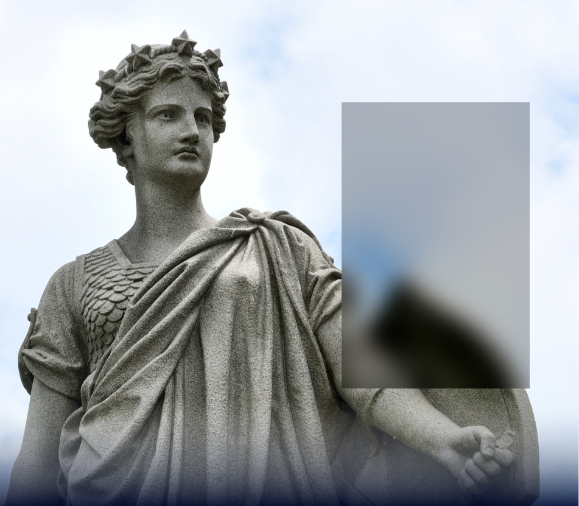

West Virginia Department of Arts, Culture, and History
About
The Department’s main offices are in the Culture Center at the State Capitol in Charleston. The building is home to the State Museum and Theater, the State Archives and Collections, and a library for genealogical research. The Department includes the West Virginia Commission on the Arts and the State Historic Preservation Office. At the Culture Center, the Department programs a full year of events and exhibits. The Department also administers four historical sites, with their own program schedules, in other areas of the state. The Culture Center is located on the Capitol Complex grounds in Charleston, West Virginia. Exit 99 off Interstate 64/77 at Greenbrier Street.